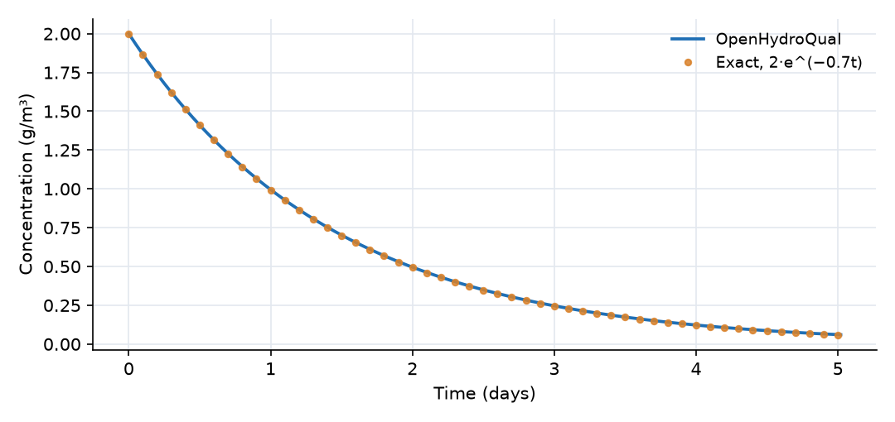
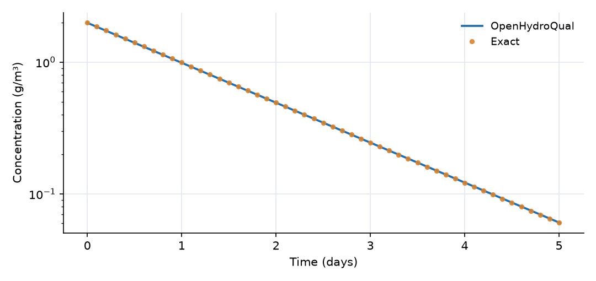

What this model represents
The simplest reaction model: a single substance disappearing at a rate proportional to its own concentration, in a closed container. First-order kinetics describe radioactive decay, the die-off of bacteria, hydrolysis and the biodegradation of many dilute organic compounds. A batch experiment like this one is how a first-order rate constant is usually measured in the laboratory.
The model also introduces the three objects every OpenHydroQual water-quality model is built from: a constituent (what is being tracked), a reaction parameter (a named coefficient) and a reaction (a rate expression with stoichiometry). Because the exact solution is known, the example doubles as a verification test.
How it works
The Batch_Reactor is a Reactor block with a fixed volume V = 1 m³ and no inflow or outflow. OpenHydroQual tracks the mass of A in the reactor, M (g), and reports the concentration C = M / V. Each reaction contributes V · ν · r to the mass balance, where ν is the stoichiometric coefficient of the constituent and r is the reaction rate in g/m³/day. With the Decay reaction, ν = −1 and r = k·A, so
dC/dt = −k · C
with exact solution
C(t) = C₀ · e^(−k·t)
where C₀ = 2 g/m³ and k = 0.7 per day. The half-life is ln 2 / k = 0.99 days. The file exact_solution.csv tabulates this function every 0.1 days and is overlaid on both plots.
The rate constant. k is a ReactionParameter. Its value is computed as base_value · θ^(T − T_ref). Here θ (the Arrhenius factor) is 1, so k equals its base value of 0.7 per day at all times. The Temperature-Dependent Kinetics example shows what happens when θ is not 1.
Time stepping. OpenHydroQual integrates the equations with a fully implicit (backward Euler) scheme. Here the time step is held at 0.01 days (max_timestep_increase_factor = 1), which keeps the change in C over one step below 1%.
What to look for in the results
- Agreement with theory. The computed curve lies on the exact solution. The computed concentration is slightly higher than the exact value, by about 0.25% per day of simulation, reaching 1.2% at day 5 (0.0611 against 0.0604 g/m³). This is the time discretization error: backward Euler multiplies C by 1/(1 + k·Δt) each step, slightly less decay per step than e^(−k·Δt), so the relative error grows linearly with time and shrinks in proportion to Δt.
- Half-life. C drops to 1 g/m³ at about 1 day, 0.5 g/m³ at 2 days, and 0.25 g/m³ at 3 days.
- Straight line on a log scale. The second plot shows ln C falling linearly with slope −k. This is the usual test for whether measured data follow first-order kinetics.
Assumptions and limitations
- The reactor is closed and perfectly mixed. There is no inflow, outflow, sorption or volatilization.
- The rate constant is constant in time. Many real decay processes slow down as conditions change (temperature, microbial population, competing substrates).
- The decay product is not tracked. To follow it, add a second constituent with a positive stoichiometric coefficient in the same reaction (see the Multi-Species Reaction Network example).
Model diagram
Hover a block or link to see its name and type. Arrows show the positive flow direction.
Components
Click a component to see every property set in the model file, with units and meaning.
Blocks 1
Storage compartments: each holds water (and dissolved or particulate mass) and has a state that evolves in time.
Batch_ReactorReactor · mass_transferA closed, well-mixed vessel of 1 m³ with no inflow or outflow. It starts with 2 g/m³ of A.
Reactor: Reactor
| Property | Value | Unit | Meaning |
|---|---|---|---|
| A: Concentration | 2 | g/m3 | Computed as mass/(Storage+0.00001) |
| Initial Storage | 1 | m3 | |
| Bottom elevation | 0 | m | |
| Constant Inflow | 0 | m3/day |
Constituents 1
Substances or particles carried by the water.
AConstituentThe decaying substance, for example a degradable organic compound, a radionuclide or a pathogen indicator.
Constituent: Chemical constituent
| Property | Value | Unit | Meaning |
|---|---|---|---|
| Concentration | 0 | g/m3 | Computed as mass/(Storage+0.00001) |
| Constant Inflow concentration | 0 | g/m3 | |
| Diffusion Coefficient | 0 | m2/s | |
| Dispersivity | 0 | m | |
| Stoichiometric Constant | 0 |
Reaction parameters 1
Named coefficients used in reaction rate expressions.
kReactionParameterFirst-order decay rate constant, 0.7 per day (half-life 0.99 days). Its Arrhenius factor is 1, so it does not depend on temperature.
ReactionParameter: Reaction Parameter
| Property | Value | Unit | Meaning |
|---|---|---|---|
| Arrhenius temperature correction factor | 1 | ||
| Value | 0.7 | ||
| Reference Temperature | 20 |
Reactions 1
Transformations among constituents, each with a stoichiometry and a rate expression.
DecayReactionThe reaction that removes A, with rate k·A and stoichiometric coefficient −1 for A.
Reaction: Chemical reaction
(k*A)| Constituent | Stoichiometric coefficient |
|---|---|
| A | -1 |
Input files
exact_solution.csv |
Simulation settings
| Start time | 0 |
| End time | 5 |
| Initial time step | 0.01 |
| Write interval (steps) | 10 |
Results
Produced by running the downloaded model unchanged.

